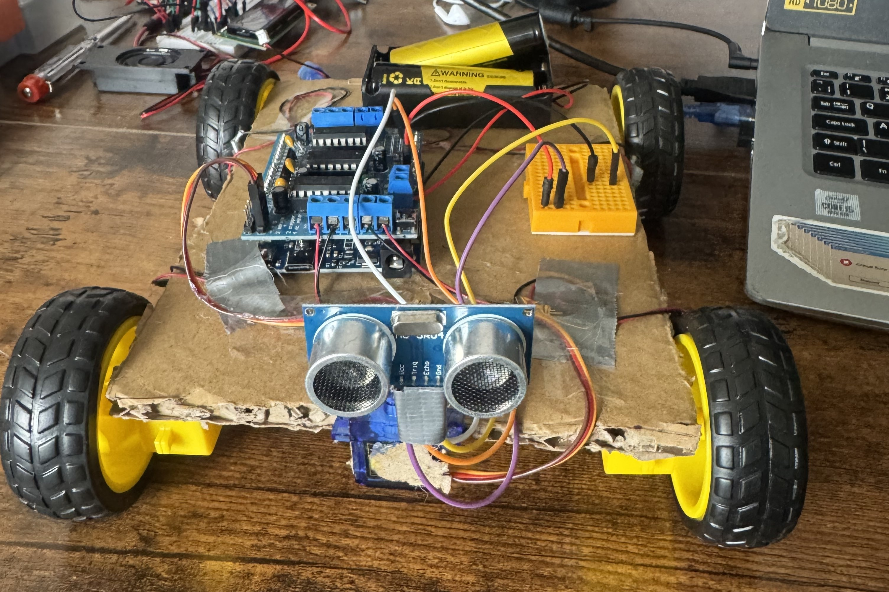
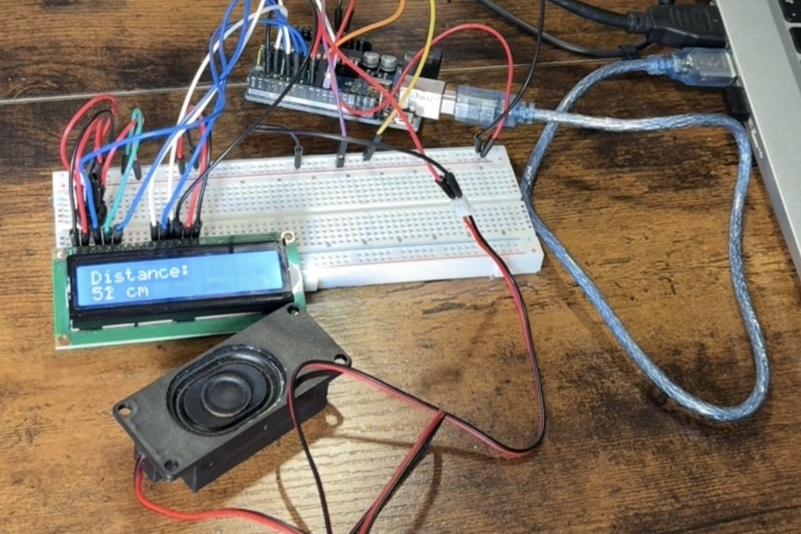
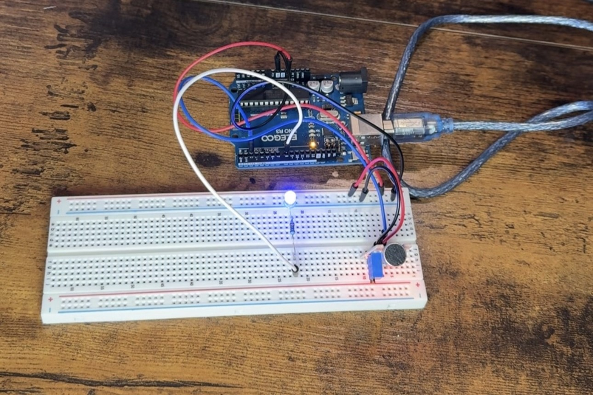
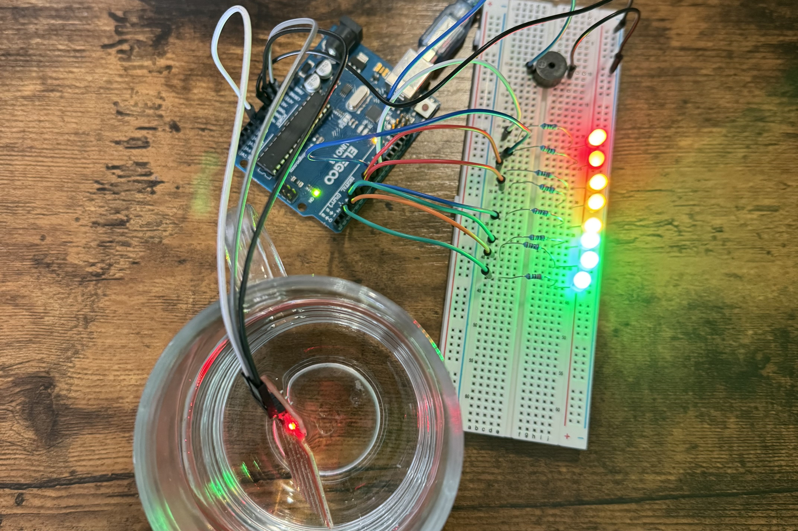
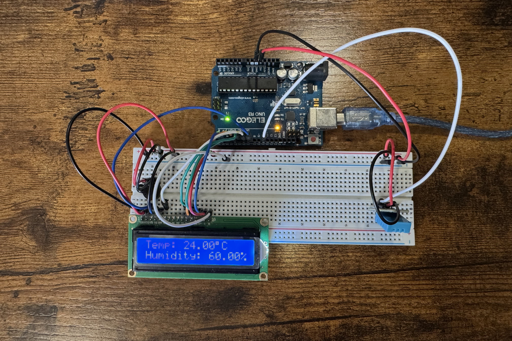

A beginner-friendly robot car that uses an ultrasonic sensor, Arduino UNO, and motor shield to detect and avoid obstacles — no remote needed. Read More →
Published: July 07, 2025
Are you new to Arduino? Check out my full guide on Getting Started with Arduino. Click here to check it out →
What You’ll Get Inside:

A beginner-friendly robot car that uses an ultrasonic sensor, Arduino UNO, and motor shield to detect and avoid obstacles — no remote needed. Read More →
Published: July 07, 2025

A simple parking-sensor-style project that uses a speaker and ultrasonic sensor to beep when close to objects. Read More →
Published: July 24, 2025

A sound sensor detects claps or loud taps and toggles an LED on or off — like a hands-free clap switch lamp. Read More →
Published: August 27, 2025

A water level indicator that lights up a series of LEDs based on how much water the sensor is submerged in — the more water, the more LEDs turn on. Read More →
Published: January 15, 2026

A DHT11 sensor and LCD1602 display work together to show real-time temperature and humidity data. Read More →
Published: January 15, 2026